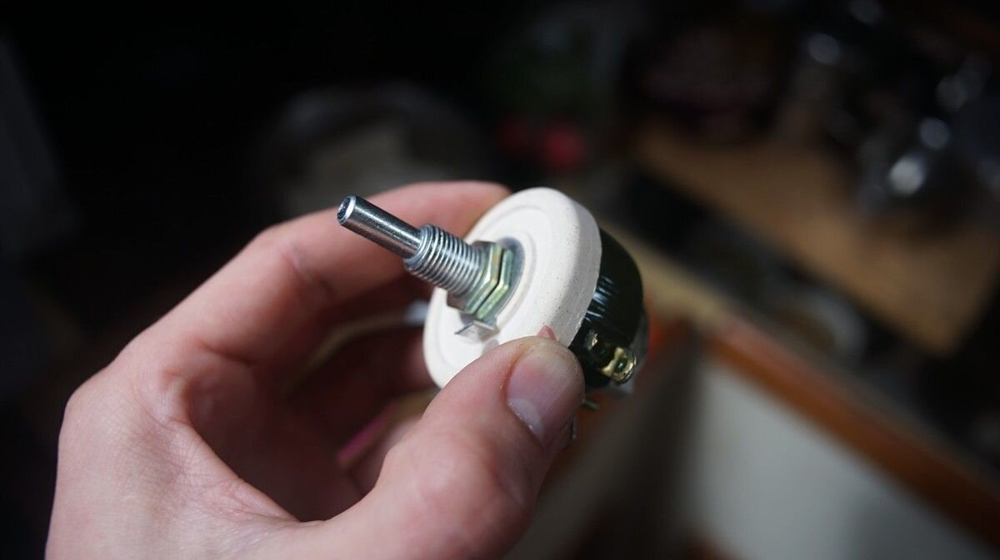
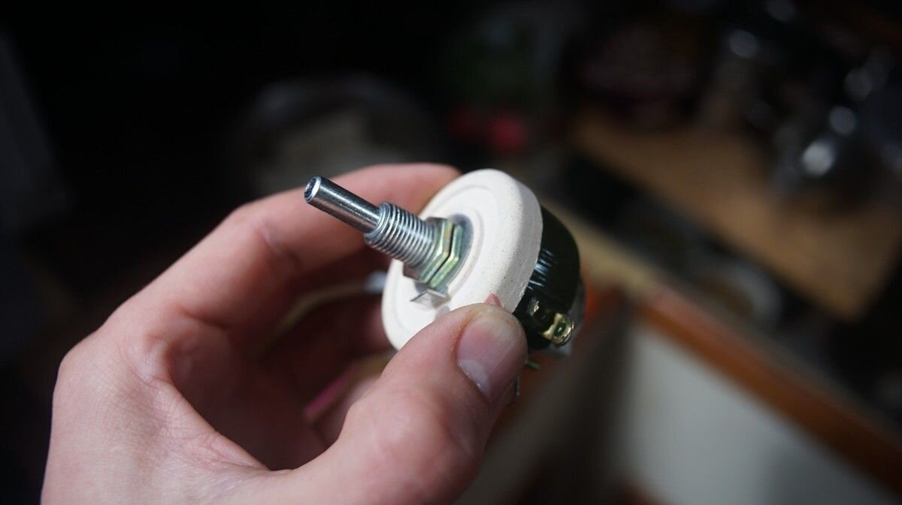
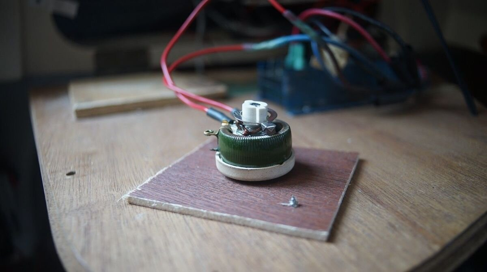
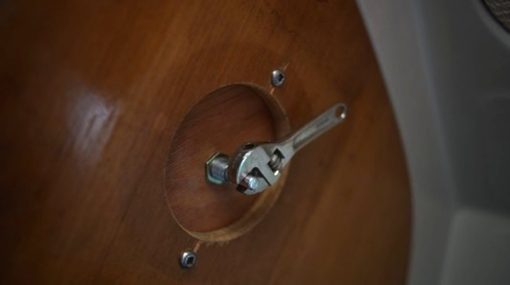

regulator
22.05.03
Victoria, Canada
Last year when we switched engines (see engine rebuild), the alternator was incorrectly wired back in. When we corrected this, the alternator began overcharging the batteries (up to 16 volts).
We inspected all connections, checked our batteries, and did a voltage regulator test as outlined in our regulator's manual.
In the end, we concluded that the regulator was faulty.

Our regulator came with the boat when we purchased in 2016. We don't know how long it's been in use. When searching for a replacement, we saw that getting the newer equivalent of our Balmar MC-512 regulator would cost us an eye-watering 600$. We could not believe the price tag. The Balmar is a good device, but if it fails it is difficult to fix because the circuit board is completely enclosed in resin.
We are always on the lookout for affordable, simpler alternatives, and when speaking to our friend Peter about our recent dilemma, he suggested we try a rheostat.
 

An important detail to note, is that regulators and rheostats are not the same thing.
A voltage regulator, like our Balmar MC-512, is a smart device that responds to changes in load and makes automatic corrections of output voltage. A rheostat is a variable resistor, it will allow us to set a voltage ratio ourselves. If we turn the knob of the rheostat, the load increases and the output voltage changes. The alternator outputs power (ours is 75 amps per hour), and if the knob is turned to low output, the rheostat only allows for a certain voltage to go through and throws the excess as heat. If the rheostat is all the way off, there is no voltage. The voltage will vary according to speed, and current draw.
We got our hands on a 50W 30R rheostat, it is built with a resistance wire wound around a semicircular ceramic insulator.

The upside of this device is that it is inexpensive, and easy enough to maintain/replace, but it does mean that we need to adjust the output by hand. We think it's possible, if we pay attention to the state of the batteries prior to turning on the alternator, and if we're careful to reduce input after a certain period (turning knob to zero and checking the state of charge). To start, we'll draw inspiration from how a smart regulator works.
There are 3 stages of charging a battery: bulk, absorption, and float stage.
- Bulk. When the battery is 80% discharged (higher voltage input is required at this stage).
- Absorption. When the battery is 80% charged. The battery will maintain a lower voltage, and the amps will decrease as the battery's state of charge will increase (a battery that is 80% charged will stay stable 12-12.7 volts).
- Float. When the battery is fully-charged. The voltage will decrease, and the amps will be 0-1.
Balmar smart regulator 8-stage charging process
The regulator starts with a delay, giving the engine a chance to warm up before adding load. Then, there's a soft ramp up, until it reaches bulk charging. Lead acid batteries will receive an output ranging from 14.1V to 14.6V at this stage. Bulk charging is preset at 18 minutes.
Batteries that are more discharged will require a higher voltage, in the bulk stage:
| Battery Discharge Stage | Voltage Required |
| 80% | 14-15V |
| 50% | 13-14V |
| 20% | 12-13V |
| 10% | 11.5-12V |
After the bulk time period, the regulator access the state of charging and will maintain bulk charging until all criteria are met, then ramp down to absorption voltage. Absorption voltage is typically two tenths of a volt below bulk target voltage. Absorption time is set at 18 minutes. There are 'accessing' periods between each stage, determining if it's fine to keep pumping higher voltage into the batteries or not. If all criteria are met, the regulator goes into float voltage. Float voltage is 1 volt below bulk target voltage, it allows the alternator to drive current into fully-charged batteries to replace any energy used while underway (set at 18 minutes). Then, there is another accessing period. If the alternator can't maintain battery voltage, it will return to absorption voltage.
Of course, we cannot replicate this complex 8-stage process exactly by hand, but we'll do tests and hope for the best. We'll use these numbers as a baseline, for when to lower the charge. On start up we can turn the knob of our rheostat all the way down so there is no voltage output, then gradually ramp up tp 14.1-14.6V. The time spent at each stage will depend on how deeply the batteries are discharged.
| State of charge (lead acid batteries) | Voltage |
| 100% | 12.73V |
| 90% | 12.62V |
| 80% | 12.50V |
| 70% | 12.37V |
| 60% | 12.24V |
| 50% | 12.10V |
| 40% | 11.96V |
| 30% | 11.81V |
| 20% | 11.66V |
| 10% | 11.51V |
More voltage may be required if there is a significant draw (running radar, for example).
Required amps to charge a 12V battery
The minimum requirement is 10% of its full capacity, and the ideal charging current is 20-25% of the battery's capacity. All batteries are different.
Our house bank is two 6V batteries wired in series (to make 12 V) yielding a total of 232Ah, to recharge it we'll need to generate a minimum of 23 amps and a maximum of 46-58 amps. When our battery is below its 80% state of charge, it's okay to pump through 46 amps to charge it. When it is above 80%, it is necessary to decrease the amps to avoid overheating the battery (overheating will decrease the battery's life).
When underway, we rarely leave the alternator running (our setup used to have an on/off switch) for long because we have solar. On grey days though, it will be nice to know that we can pump juice into our batteries.
Installation
We used the space from our old alternator switch for the rheostat. It is still a mystery to us why there was a switch there in the first place, we think it may have been to bypass some terrible wiring, or maybe to have the option to reduce load on the engine when it is running.
We sprayed the device with fluid film (lanolin-based spray) to protect it from corrosion.
The rheostat we got doesn't come with a knob, but we plan to make one out of wood (soon). We'll have to mark up the area around the knob, so we can know which position outputs how much.
Since we don't yet have a knob, we're using a very cute mini adjustable wrench that we forgot we had.
If the rheostat turns out to be too much of a pain, we're considering building a DIY regulator:
Summer 2022 update. The alternator didn't see much use that summer. In BC, the days are long, and our solar panels do a good job of keeping our batteries topped off. We ran the alternator a few times, turning the rheostat to test it out. The important thing, evidently, is to keep watch. Devine turned the rheostat on as we were motoring one morning, than forgot about it... we realized it was cooking the batteries when my(Rek) sensitive nose detected the smell of chlorine (batteries off-gassing). To make matters worse, Devine had not told me that they'd turned it on. In the future, we always have to tell each other it is on, and we have to keep a very tight watch.